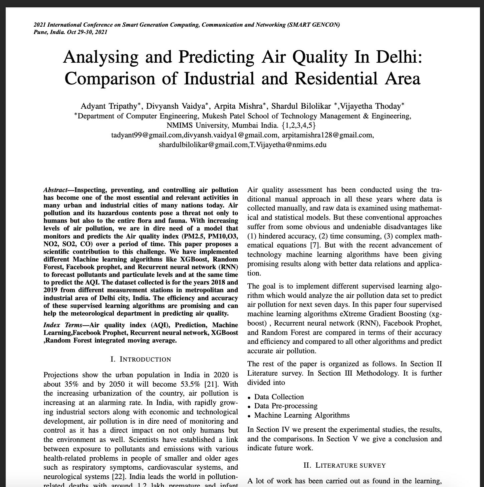

July 2020-2021
Development of modules on the basis of machine learning algorithms and hosting the results on a website that allows users to view the air quality index and gives an overview of the report along with necessary recommendations regarding
any serious hazard that can be caused, along with ways to improve the prediction accuracy in the meteorological department.
Processed, managed, and analyzed market research on AI-powered products about Machine Learning and Deep Learning capabilities. Performed various forms of statistical and data analysis on volumes of complex data that accelerated decision making algorithm performance by 7%.
Developed a system for analyzing engagement of users on the website to track growth with real-time reporting across various channels. Used HTML, CSS, JavaScript, PHP, and Django while executing. Incorporated CRUD features i.e., Create, Read, Update and Delete on the web service. Boosted traffic by 25%.
Created a website which allowed users to book a bus ride based on various inputs and incorporated various new features in the website.

State wise analysis of retail with the main focus in prediction of demand accurately and ingest various factors for future decision.

Published a research paper based on the analysis, predictions and comparisons in Air Quality between the industrial and residential area of Delhi in the 2021 International Conference on Smart Generation Computing, Communication and Networking.
Insights, analysis and pattern identification for vaccine distribution in the state of Texas with aim to answer hypotheses and help in future decision making processess. Data scrapped from online sourses in varying formats.